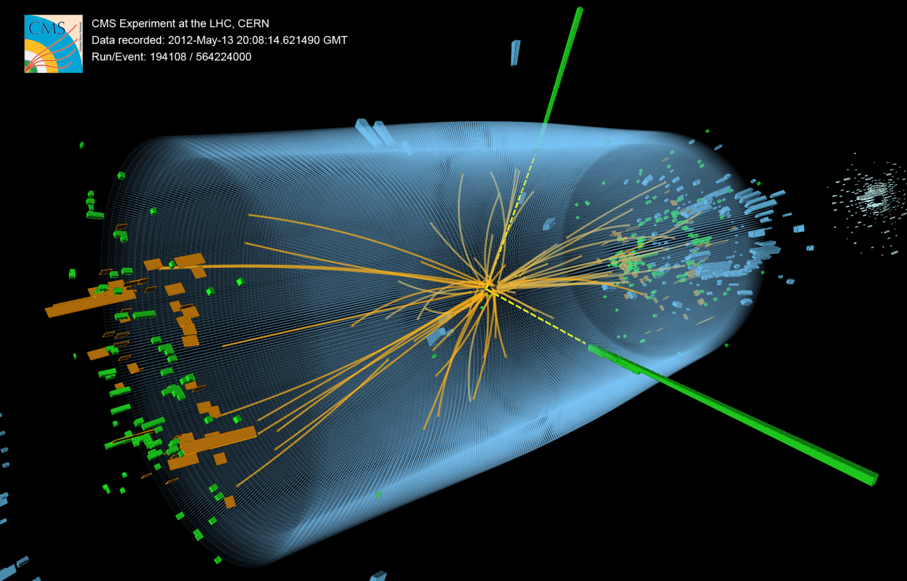
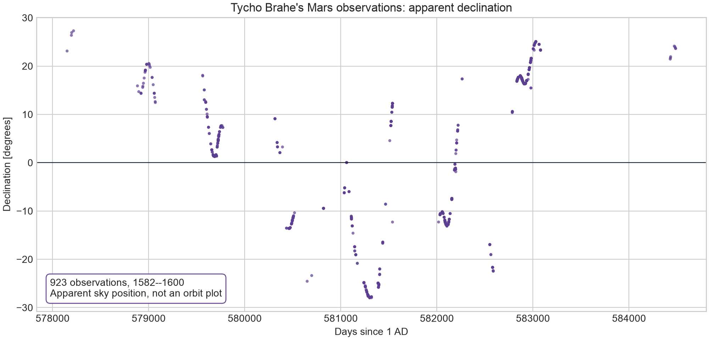
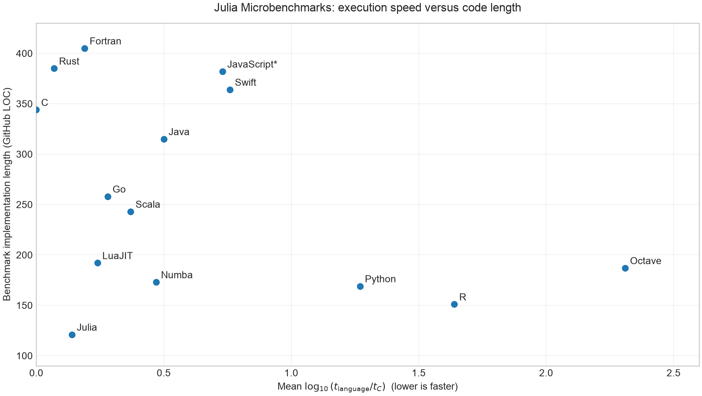
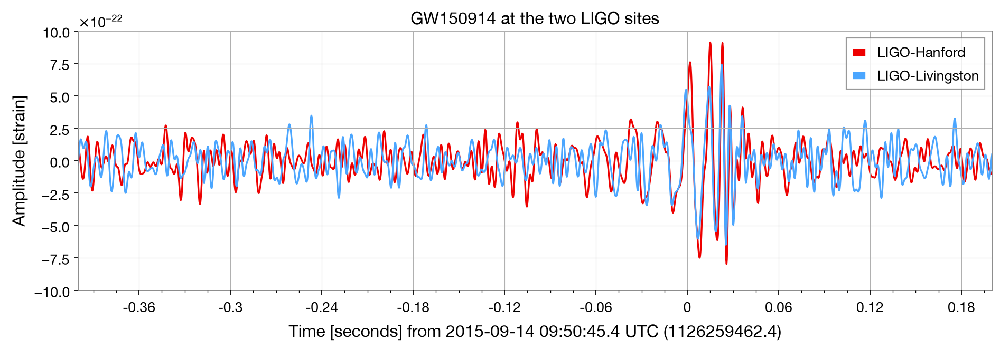

We turn physical questions into calculations we can inspect and revisit.
Here a cloud-resolving model follows cloud water and rain as they evolve in the atmosphere. Numerical methods advance coupled fluid and microphysics equations across a three-dimensional grid.
CellularLES rain-volume simulation. The course begins with smaller models and builds the habits we need to understand computations at this scale.

Two energetic photons leave reconstructed signals in the detector. Their energies and directions give physicists the pair's invariant mass.
The mass relation comes from four-momentum conservation; numerical reconstruction extracts photon properties from detector signals. Across many collisions, the mass distribution showed an excess near the Higgs-boson mass.
Image: CMS/CERN, diphoton event selected in the Higgs search.
Do voltage and current follow a line? What resistance does the data support?
How does air resistance bend a projectile's path away from the ideal parabola?
We will start with a supplied table, a plot, and a straight-line fit. The same cycle—model, calculate, compare—will take us from these first examples toward larger scientific problems.

A sample of Tycho Brahe's historical declination measurements of Mars. The record is a time series of angles, not a ready-made orbit.
Historical declinations are not orbit coordinates yet. With programming, geometry, and fitting, we can compare a circular model and an elliptical one against these measurements.
This is the first-semester path: read data, model it, test it, and report what the data can and cannot establish.
Readable mathematical notation, interactive work, multiple dispatch, and high-performance numerical libraries support our core development.
A broad scientific ecosystem makes it an important transferable language. Models, tests, and data habits transfer between languages.
Neither language is universally superior; the physical question and the established tools matter.
The mathematics we write down, xn+1 = A xn + B un and yn = C xn, maps almost line by line onto the code:
x_next = A * x + B * u
y = C * xHere x, u, and y are vectors, while A, B, and C are matrices. The same conversion habit applies to the expressions we meet all semester:
Σi xi·yi → sum(x .* y)
√x → sqrt(x)
x² → x^2, and xi² over an array → x.^2
A·x → A * x
∇φ → gradient(φ, x)

Each point is a small numerical kernel: the horizontal axis is execution time relative to C on a log scale (left is faster), and the vertical axis is the length of the implementation. Julia sits close to compiled languages while the example code stays compact. The timings describe these selected kernels only.
Python's broad ecosystem turns a huge range of tasks into a few lines — from data cleaning to public scientific archives. Here we fetch real gravitational-wave data from two detectors:
from gwosc.datasets import event_gps
from gwpy.timeseries import TimeSeries
from gwpy.signal import filter_design
t0 = event_gps("GW150914")
h = TimeSeries.fetch_open_data("H1", t0-16, t0+16)
l = TimeSeries.fetch_open_data("L1", t0-16, t0+16)
bp = filter_design.bandpass(50, 250, h.sample_rate)
ns = [filter_design.notch(f, h.sample_rate)
for f in (60, 120, 180)]
zpk = filter_design.concatenate_zpks(bp, *ns)
hf = h.filter(zpk, filtfilt=True)
lf = l.filter(zpk, filtfilt=True)
lf.shift("6.9ms"); lf *= -1Overlay t0 - 0.4 to t0 + 0.2. Reproduce: graphics/generate_gwpy_example.py.

Each series contains 131,072 samples at 4,096 Hz over 32 seconds. Agreement after the documented 6.9 ms delay and orientation correction is evidence across independent detectors; filtering and visual agreement alone do not establish a detection. Source: GWOSC, CC BY 4.0.
Download and install Git from git-scm.com/downloads (Windows, macOS, or Linux). If you cannot install Git, use the repository's Code → Download ZIP instead.
Install Julia with Juliaup: winget install julia -s msstore. Or download the installer from julialang.org/install.
Install Juliaup: curl -fsSL https://install.julialang.org | sh, then juliaup add 1.12.
In a terminal, julia +1.12 --version should print a line beginning with julia version 1.12.
Reading needs no setup: open the links on the course page. To run the code, clone the repository — or, without Git, use Code → Download ZIP on the repository page and unpack it — then install the recorded environment from the repository root.
git clone https://github.com/nshaviv/physprog.git
cd physprog
julia --project=. -e 'using Pkg; Pkg.instantiate()'
julia --project=. verify_environment.jlThe repository grows during the semester: worked solutions, more homework, and corrections are added. From the repository root, pull the latest version:
git pull --ff-onlyIf you used Download ZIP, download a fresh ZIP when a release is announced. If a release updates the environment, re-run julia --project=. -e 'using Pkg; Pkg.instantiate()'.
Get the official Visual Studio Code from code.visualstudio.com for your operating system, and install it normally.
Use File → Open Folder and choose the cloned course folder (the one containing Project.toml).
Ctrl+Shift+X, or Cmd+Shift+X).Julia and install the official extension by julialang.julia.executablePath to your Julia executable (or choose Configure path).Then open a .jl file and run it with Run → Run Without Debugging; the output appears in the terminal.
.ipynb file and click Select Kernel.The notebooks already contain their saved outputs, so reading them needs no setup; running them is optional.